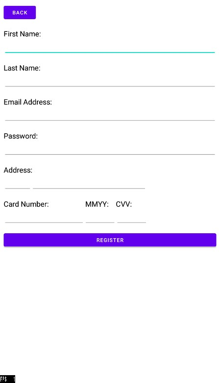
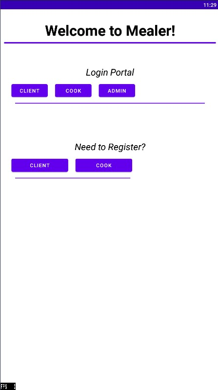

Mealer is a simple Android application that allows the purchase of meals by clients from cooks. Mealer has an admin who manages a list of complaints filed by clients and they can administer suspensions to cooks they deem problematic. The application was programmed entirely in Java and user information was stored into a Firebase Database.
- Programming Language: Java
- Integrated Development Environment: Android Studio
- Database: Firebase Database
Component Diagram
Client Application Components:
- Registration and Authentication
- User Dashboards
- Meal Management
- Complaint Management
- Search and Browse Meals
Backend Services:
- User Data Management
- Meal Data Management
- Complaint Data Management
Features and Functionalities
Client Registration:
- Fields: Name, Email, Password, Address, Payment Details
- Validation: Email format, password strength
- Database: Store client information in Firebase
Cook Registration:
- Fields: Name, Email, Password, Address, Culinary Experience, Specialty
- Validation: Email format, password strength
- Database: Store cook information in Firebase
Authentication:
- Log In: Email and Password authentication using Firebase Authentication
- Log Out: User session management
Other Features:
- User Dashboards
- Administration privileges
- Meal Management (add meals, update meals, view meals, search meals, purchase meals)
- File Complaint
Images of application

